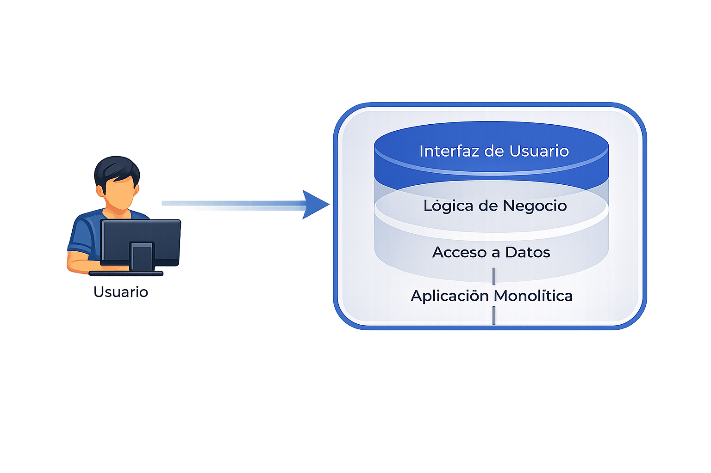
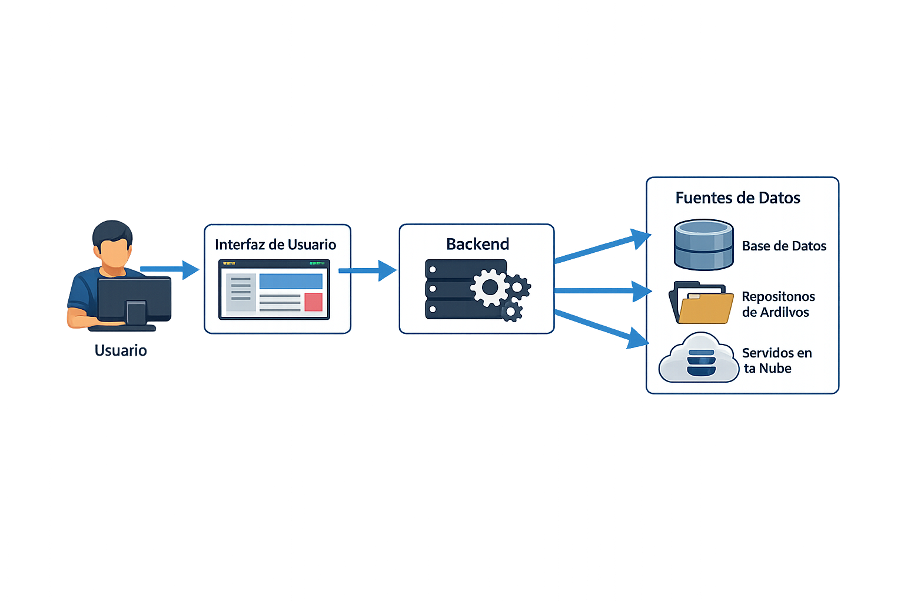
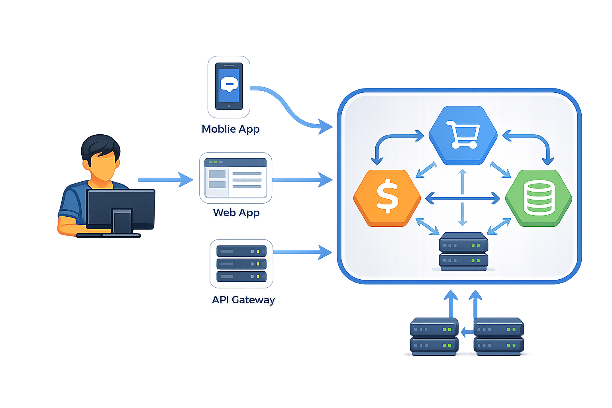

Contenido estructurado para formar una base conceptual sólida en diseño de soluciones Azure: fundamentos correctos, evolución del mercado, clasificación de servicios, seguridad y costos.
1. Fundamento universal de una aplicación
Interfaz
Medio de interacción.
Gráfica (web/móvil), CLI o API.
Lógica / procesamiento
Recepción, validación y transformación de datos.
Reglas de negocio y generación de resultados.
Datos
Temporales (memoria) y persistentes.
Estructurados, no estructurados, semi-estructurados y vectoriales.
Los componentes pueden estar integrados o desacoplados, dependiendo de la arquitectura.
`
Ejemplo monolítico
Interfaz, lógica y datos en un solo sistema.

Ejemplo desacoplado
Interfaz, backend separado y base de datos independiente.

Microservicios
Interfaces web/móvil, backend único con APIs y múltiples servicios de datos.

2. Evolución de las aplicaciones y variaciones del mercado
Tradicional: monolíticas en un solo sistema.
Transición web: separación frontend, backend y base de datos.
Variaciones del mercado: interfaces web/mobile/multiplataforma, múltiples lenguajes y frameworks, integración por APIs y consumo humano/sistema y sistema/sistema.
Resultado: arquitecturas desacopladas, backend único y responsabilidades separadas.
3. Problemas al desacoplar sistemas
Comunicación entre componentes.
Seguridad e identidad.
Monitoreo, costos y gobierno.
4. Modelos de servicio y ejecución
IaaS: control de infraestructura y del sistema operativo.
PaaS: infraestructura administrada y foco en la aplicación.
SaaS: software completamente administrado.
Serverless: ejecución bajo demanda, sin gestión de servidores y basada en eventos.
Modelo
Servidor
Gestión
IaaS
Visible
Usuario
PaaS
Abstracto
Compartida
Serverless
No visible
Proveedor
5. Consideraciones para la creación de recursos
Ubicación (región): afecta latencia, costo, disponibilidad y cumplimiento legal (soberanía de datos).
Capacidad / SKU: define nivel de servicio, límites de hardware y recursos asignados.
Modelo de ejecución: define si el cobro es por recurso siempre activo, serverless o escalado automático.
Acceso y seguridad: define visibilidad pública/privada, autenticación y restricciones de red (IPs).
Integraciones / dependencias: relación con otros servicios y recursos implícitos (discos, NICs, IPs).
Impacto de configuración: decisiones de identidad (nombre) y ubicación difíciles de modificar sin recrear.
Jerarquía y Organización: uso de Suscripciones y Resource Groups para agrupación lógica y de costos.
Tags: clasificación por ambiente, proyecto y responsable para auditoría y facturación.
Gobernanza y Bloqueos: uso de "Resource Locks" para evitar borrado accidental o modificaciones críticas.
6. Servicios de cómputo
Los servicios de computación de Azure proporcionan una suite de herramientas para crear y desplegar aplicaciones de forma eficiente. Entre ellos están las máquinas virtuales (VM), Azure Kubernetes Service (AKS), Azure Functions, App Service, Container Apps y Logic Apps. Cada uno responde a necesidades distintas, desde control total hasta automatización y escalabilidad.
Permiten virtualización sin invertir en hardware.
Entornos personalizables para desarrollo, pruebas y producción.
Soportan distintos sistemas operativos (ej. Linux en host Windows).
Ideal para aplicaciones legacy o cuando se requiere control específico.
Solución serverless: elimina la gestión de servidores.
Escalado automático y pago solo por ejecución.
Soporta C#, Java, JavaScript, Python y PowerShell.
Ideal para tareas por eventos: HTTP, temporizadores, colas, etc.
Permite enfocarse en el código y la lógica de negocio.
Permite automatizar y orquestar flujos de trabajo empresariales.
Integración con cientos de servicios y conectores.
Ideal para procesos repetitivos y automatización de integraciones.
Plataforma Kubernetes gestionada para desplegar y administrar aplicaciones en contenedores.
Gestión de nodos, supervisión y mantenimiento automatizados.
Pago por uso de los nodos que ejecutan tus aplicaciones.
Ideal para orquestación de contenedores y arquitecturas de microservicios.
Soporta autoescalado, agrupaciones multinodo, integración de almacenamiento y seguridad avanzada.
Facilita el descubrimiento de servicios, balanceo de carga y comunicación eficiente entre microservicios.
6.1 Azure Virtual Machine
Definición y Modelo de Servicio
Concepto: Instancia de cómputo que emula un servidor físico (CPU, RAM, Almacenamiento).
Modelo de Responsabilidad: Bajo IaaS, el usuario gestiona el Sistema Operativo, parches, middleware y aplicaciones; Microsoft garantiza la disponibilidad del hardware físico.
Casos de Uso:
Migraciones directas (Lift-and-Shift) de infraestructura local.
Entornos con requisitos específicos de kernel o software no disponible en PaaS.
Aislamiento total de recursos para procesamiento de datos.
Dependencias de Infraestructura (Recursos Hijos)
Una Virtual Machine no es un recurso autónomo; su despliegue requiere y dispara la creación de servicios asociados:
Network Interface (NIC): Componente mandatorio que interconecta la VM con la red. Sin una NIC, la instancia carece de identidad y comunicación.
Virtual Network (VNet) y Subnet: Espacio lógico obligatorio donde reside la VM. Define el segmento de red y el direccionamiento IP interno.
Managed Disks: Almacenamiento persistente para el SO y datos.
Conectividad: Entradas y Salidas
Public IP: Recurso opcional que permite la visibilidad y el acceso a la VM desde Internet (ej. para administración vía RDP/SSH).
Integración Empresarial: Capacidad de la VM para conectarse a redes físicas locales (On-premise) mediante Gateways o VPNs, permitiendo arquitecturas híbridas.
Comunicación Interna: Uso de IPs privadas para interconexión segura con otros servicios de Azure (Bases de datos, Almacenamiento, otras VMs) sin exponer el tráfico a la red pública.
⚠️ Nota de Arquitectura: La conectividad de una VM no es solo hacia afuera (Internet), sino hacia adentro (VNet). Por ejemplo, un error común es dejar IPs públicas activas cuando la máquina solo necesita hablar con una base de datos interna de Azure.
Acceso y Autenticación
Protocolos: RDP para Windows y SSH para Linux.
Seguridad: Recomendación de deshabilitar acceso público directo, utilizando VPN o Azure Bastion para conexiones seguras.
Autenticación:
Autrencicacion basada en credenciales (Usuario y contraseña)
Autenticación basada en claves SSH para Linux
Autenticación basada en Azure Active Directory (Entra ID) para Windows
Identidad: Integración con Azure Active Directory (Entra ID) para control de acceso basado en roles (RBAC).
Azure Spot Instances: Gestión de Capacidad Excedente
Naturaleza: Uso de la infraestructura ociosa en los centros de datos de Microsoft con descuentos de hasta el 90% sobre la tarifa regular.
Mecanismo de Desalojo (Eviction): Microsoft recupera el hardware de forma inmediata cuando existe demanda de clientes con tarifa regular (Pay-As-You-Go).
Notificación Crítica: Se emite un preaviso de únicamente 30 segundos antes de la interrupción del servicio.
Política de Respuesta: El usuario define si la instancia se detiene (Deallocate) o se elimina automáticamente (Delete) tras el desalojo.
⚠️ Nota de Arquitectura: El uso de Spot Instances está estrictamente limitado a entornos de desarrollo, pruebas o tareas no críticas que toleren interrupciones. Jamás debe utilizarse para ambientes de producción o procesos donde la persistencia del tiempo de actividad sea mandatoria.
Gestión de Operaciones y Ahorro
Auto-shutdown: Política de control de costos mediante el apagado programado de la instancia.
Comportamiento: Cierre forzoso de sesiones activas e interrupción de procesos a la hora definida; permite alertas de cortesía 30 minutos antes para postergación manual.
Estado Deallocated: Estado final tras un apagado (manual o programado) donde se libera el costo de cómputo (CPU/RAM = $0), pero persiste el cobro por almacenamiento de discos e IPs reservadas.
Boot Diagnostics: Herramienta visual para depurar errores críticos de carga del Sistema Operativo sin necesidad de acceso RDP/SSH.
Estrategias de Escalabilidad
Escalado Vertical (Up/Down): Cambio de SKU para modificar la capacidad de hardware (ej. aumentar RAM). Requiere un reinicio forzado de la instancia.
Escalado Horizontal (Out/In): Implementación de Virtual Machine Scale Sets (VMSS) para desplegar réplicas idénticas de la VM tras un balanceador de carga.
Ventaja: Permite absorber picos de demanda distribuyendo el tráfico entre múltiples nodos sin interrumpir el servicio.
Consideraciones de Persistencia
Managed Disks: Almacenamiento persistente (SSD/HDD) independiente de la VM.
Delete with VM: Configuración recomendada para asegurar que, al eliminar la instancia, se limpien automáticamente sus discos e interfaces de red, evitando costos residuales por recursos huérfanos.
6.2 Azure App Service
Definición y enfoque del servicio
Concepto: servicio PaaS para desplegar aplicaciones web, APIs y backends sin administrar directamente sistema operativo, parches o servidor.
Diferencia clave frente a VM: la infraestructura sigue existiendo, pero se abstrae para que el equipo se concentre en la aplicación y su configuración.
Separación importante: la aplicación no es la infraestructura; el recurso visible para el usuario y la capacidad de cómputo son componentes distintos.
Relación entre App Service y App Service Plan
App Service: representa la aplicación publicada, su configuración y su punto de exposición.
App Service Plan: define la infraestructura real donde corre la aplicación: CPU, memoria, escalabilidad y región.
Modelo compartido: varias aplicaciones pueden hospedarse dentro del mismo plan y comparten la capacidad disponible.
Implicación operativa: el costo y la potencia no dependen directamente del número de apps, sino del plan que las sostiene.
Idea clave: App Service es la aplicación; App Service Plan es el servidor abstracto que realmente aporta la capacidad de ejecución.
Modelo de ejecución y costo
Ejecución continua: los recursos del plan permanecen asignados según la capacidad configurada.
Costo por capacidad provisionada: aunque la app no reciba tráfico, la infraestructura del plan sigue activa y genera costo.
Diferencia con serverless: en App Service se paga por capacidad disponible; en modelos serverless el costo depende más directamente de la ejecución.
Modelos de despliegue
Code-based: se despliega el código y la plataforma administra el runtime compatible.
Container-based: se despliega una imagen de contenedor, dando mayor control sobre dependencias y entorno de ejecución.
Punto en común: en ambos casos la aplicación corre sobre el mismo modelo de hosting del App Service Plan.
Slots de despliegue
Deployment slots: entornos paralelos dentro del mismo App Service, por ejemplo `staging` y `production`.
Validación previa: permiten probar una versión antes de exponerla al usuario final.
Swap: una versión validada puede intercambiarse con producción sin redeploy completo, reduciendo riesgo e interrupciones.
Escalabilidad
Escalado vertical: aumentar la capacidad del plan, por ejemplo más CPU o memoria.
Escalado horizontal: incrementar el número de instancias para distribuir carga.
Impacto compartido: si varias aplicaciones usan el mismo plan, el escalado afecta a todas porque comparten la misma base de infraestructura.
Configuración y seguridad
Configuración desacoplada: variables de entorno y cadenas de conexión separadas del código.
Manejo de secretos: puede integrarse con servicios especializados para evitar credenciales embebidas en la aplicación.
Exposición por defecto: la aplicación suele publicarse mediante URL HTTP/HTTPS accesible desde Internet.
Controles de acceso: restricciones por IP, reglas de acceso y configuración CORS según el tipo de consumidor.
Dependencias y consideraciones de arquitectura
Dependencia principal: App Service Plan.
Recursos complementarios: monitoreo, configuración de red, almacenamiento y otros servicios de soporte pueden formar parte de la solución.
Uso recomendado: aplicaciones web, APIs y backends que requieren disponibilidad continua sin administrar infraestructura base.
No ideal para: cargas puramente event-driven o escenarios donde se requiere control total del sistema operativo.
Síntesis: App Service es un punto intermedio entre una VM y un modelo serverless. Simplifica la operación, pero exige entender bien el App Service Plan para diseñar capacidad, costos y aislamiento.
6.3 Azure Container Apps
Definición: servicio PaaS orientado a la ejecución de aplicaciones basadas en contenedores, sin administrar directamente servidores ni orquestadores.
Modelo de ejecución: permite ejecutar contenedores con escalado automático, incluyendo la posibilidad de escalar a cero cuando no hay carga.
Unidad de despliegue: la aplicación se define a partir de una imagen de contenedor que incluye runtime, dependencias y configuración.
Relación de componentes:
Container Registry: almacena las imágenes de contenedores. No ejecuta aplicaciones, solo sirve como repositorio.
Container App: es la aplicación en ejecución. Toma una imagen del registry y la ejecuta.
Container Apps Environment: es el entorno donde viven las aplicaciones, definiendo red, aislamiento y configuración compartida.
Flujo de funcionamiento:
El código se empaqueta como imagen de contenedor.
La imagen se almacena en un Container Registry.
La Container App obtiene la imagen y la ejecuta.
La aplicación se ejecuta dentro de un Container Apps Environment.
Container Apps Environment: agrupa múltiples aplicaciones y define:
conectividad (pública o privada)
comunicación entre servicios
integración con red (VNet)
observabilidad
Configuración de la aplicación:
CPU y memoria por instancia
variables de entorno
secrets
configuración de ingress (acceso)
revisions (versionamiento)
Escalado: permite configuración basada en:
tráfico HTTP
eventos (colas, mensajes)
número mínimo y máximo de instancias
Exposición y acceso: puede configurarse como:
público (internet)
interno (solo red privada)
Container Registry: permite almacenar y versionar imágenes de contenedor. Se integra con Container Apps mediante credenciales o identidad administrada.
Integración con CI/CD: flujo típico:
construcción de imagen
publicación en registry
despliegue de nueva revisión
Observabilidad: incluye logs, métricas y monitoreo para analizar ejecución, errores y consumo de recursos.
Factores de costo:
CPU y memoria consumida
tiempo de ejecución
número de instancias
servicios adicionales (logs, registry, red)
Casos de uso: adecuado para microservicios, APIs en contenedores, aplicaciones event-driven y cargas variables.
Consideración: ofrece mayor flexibilidad que App Service en escenarios de contenedores, pero introduce conceptos adicionales como environments, revisions y escalado por eventos.
7. Servicios de datos
Storage (PaaS): datos no estructurados y archivos.
Azure SQL (PaaS): provisionado o serverless para datos estructurados.
Cosmos DB (PaaS): provisionado o serverless para datos flexibles.
8. Seguridad e identidad
Autenticación (verificación de identidad) y autorización (control de acceso).
Factores: conocimiento, posesión y biometría.
Entra ID: usuarios, grupos y gestión de identidad.
RBAC: roles, permisos y alcance.
Managed Identity: identidad para recursos sin credenciales embebidas.
9. Key Vault
Almacenamiento seguro de claves, secretos y certificados.
Integración con identidad para gestión segura de credenciales.
10. Networking
VNet como red privada, subnets para segmentación.
NSG para reglas de tráfico y Firewall para control de acceso.
Restricciones por IP, por origen y mediante CORS.
11. Observabilidad
Monitoreo integral de servicios.
Logs, métricas y trazabilidad como elementos base.
12. Costos
Factores: tiempo, ejecuciones, almacenamiento y operaciones.
Variables: SKU, región y escalado.
Modelos: consumo, capacidad y reservas.
Control: monitoreo, organización y uso disciplinado de tags.
13. Integración de solución
Flujo base: interfaz → backend → datos.
Componentes adicionales: identidad, seguridad, red y monitoreo.